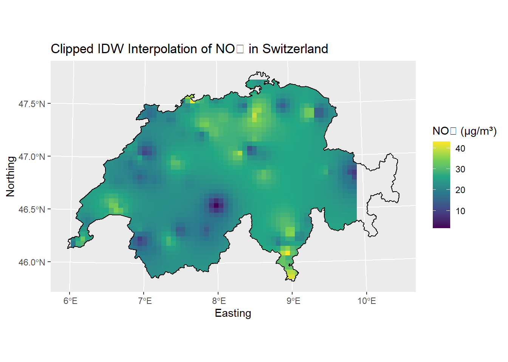
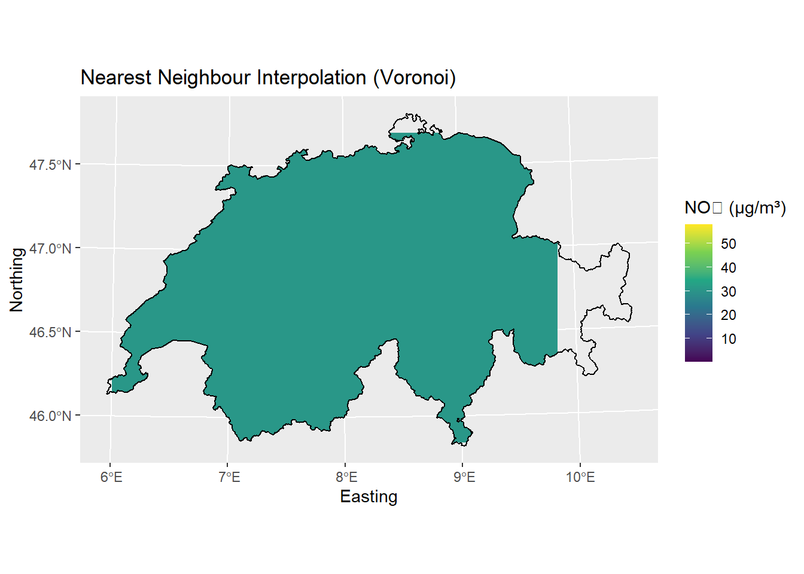
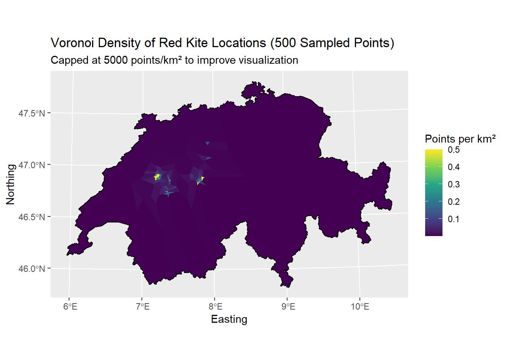
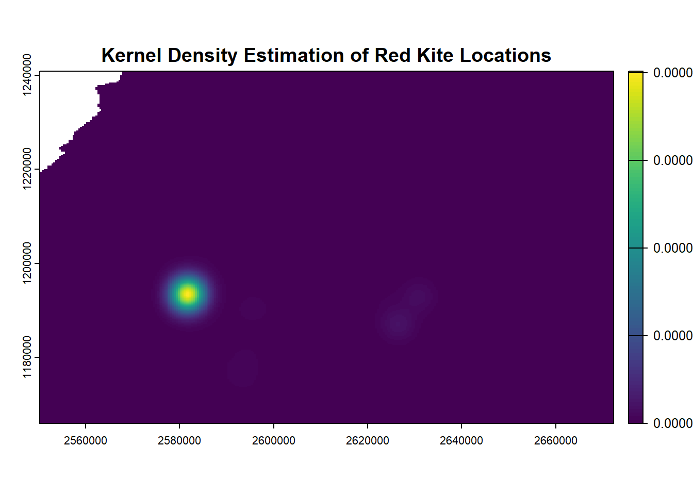

# In this section, we use interpolation techniques to estimate nitrogen dioxide (NO₂)
# concentrations across Switzerland. We compare Inverse Distance Weighting (IDW) with
# a nearest neighbour approach using Voronoi polygons.Solution for Week 7: Interpolation / Density Estimation
1 Spatial Interpolation of NO₂ Measurements in Switzerland
# Install Libraries
library(sf)
library(gstat)
library(ggplot2)
library(dplyr)
library(viridis)# 1. Load NO₂ data
no2_data <- st_read("data/luftqualitaet.gpkg")Reading layer `luftqualitaet' from data source
`C:\Users\pasca\Desktop\STDS7\data\luftqualitaet.gpkg' using driver `GPKG'
Simple feature collection with 97 features and 2 fields
Geometry type: POINT
Dimension: XY
Bounding box: xmin: 2489281 ymin: 1077455 xmax: 2784450 ymax: 1282800
Projected CRS: CH1903+ / LV95# 2. Create interpolation grid (5 km resolution)
grid <- st_make_grid(no2_data, cellsize = 5000)
grid_sf <- st_sf(geometry = grid)
grid_sf <- st_transform(grid_sf, st_crs(no2_data))
# 3. IDW interpolation
idw_result <- idw(
formula = value ~ 1,
locations = no2_data,
newdata = grid_sf,
idp = 2
)[inverse distance weighted interpolation]# I tested different values for maxdist, nmax, and idp to see how they change the result.
# If maxdist is too small, some areas stay empty. A higher nmax includes more stations and smooths the surface.
# 4. Load Swiss border and match CRS
swiss_border <- st_read("data/schweiz.gpkg")Reading layer `schweiz' from data source
`C:\Users\pasca\Desktop\STDS7\data\schweiz.gpkg' using driver `GPKG'
Simple feature collection with 1 feature and 2 fields
Geometry type: POLYGON
Dimension: XY
Bounding box: xmin: 2485410 ymin: 1075268 xmax: 2833858 ymax: 1295934
Projected CRS: CH1903+ / LV95swiss_border <- st_transform(swiss_border, st_crs(idw_result))
# 5. Clip interpolation to Swiss border
idw_clipped <- st_intersection(idw_result, swiss_border)
# 6. Plot clipped result
ggplot() +
geom_sf(data = idw_clipped, aes(fill = var1.pred), color = NA) +
geom_sf(data = swiss_border, fill = NA, color = "black", linewidth = 0.4) +
scale_fill_viridis_c(name = "NO₂ (µg/m³)") +
coord_sf() +
labs(
title = "Clipped IDW Interpolation of NO₂ in Switzerland",
x = "Easting", y = "Northing"
)
# Somethings looks odd. Let's check if there is a lack of stations in Eastern Switzerland.
ggplot() +
geom_sf(data = idw_clipped, aes(fill = var1.pred), color = NA) +
geom_sf(data = swiss_border, fill = NA, color = "black", linewidth = 0.4) +
geom_sf(data = no2_data, color = "red", size = 1) + # add this line
scale_fill_viridis_c(name = "NO₂ (µg/m³)") +
coord_sf() +
labs(
title = "NO₂ Interpolation with Monitoring Stations",
x = "Easting", y = "Northing"
)# Some areas (e.g. Grisons) look empty or grey
# because there are no NO₂ stations nearby. IDW can only interpolate
# where data exists — it doesn't guess far beyond the last station.# Exercise 2: Nearest Neighbour (Voronoi)
# 1. Create Voronoi polygons (same as before)
bbox_union <- st_union(no2_data)
voronoi_geom <- st_voronoi(st_geometry(no2_data), envelope = st_geometry(bbox_union))
voronoi_sf <- st_collection_extract(voronoi_geom)
voronoi_sf <- st_sf(geometry = voronoi_sf)
# 2. Attach NO2 values directly by row index (one-to-one match)
voronoi_sf$value <- no2_data$value
# 3. Clip to Switzerland
voronoi_clipped <- st_intersection(voronoi_sf, swiss_border)
# 4. Simplify geometry (optional)
voronoi_simple <- st_simplify(voronoi_clipped, dTolerance = 50)
# 5. Plot
ggplot() +
geom_sf(data = voronoi_simple, aes(fill = value), color = NA) +
geom_sf(data = swiss_border, fill = NA, color = "black", linewidth = 0.4) +
scale_fill_viridis_c(name = "NO₂ (µg/m³)") +
coord_sf() +
labs(
title = "Nearest Neighbour Interpolation (Voronoi)",
x = "Easting", y = "Northing"
)
2 Red Kite Movement Density Analysis
# This part focuses on analysing red kite movement data within Switzerland.
# I used two spatial methods to estimate and visualize location density:
# 1. Kernel Density Estimation (smooth probability surface)
# 2. Voronoi Diagrams (nearest-neighbour-based density)# Load required libraries
library(sf)
library(gstat)
library(ggplot2)
library(dplyr)
library(viridis)
library(terra)
library(MASS) # For kde2d as lightweight alternative# 1. Load red kite data and Swiss border
kite_data <- st_read("data/rotmilan.gpkg")Reading layer `rotmilan' from data source
`C:\Users\pasca\Desktop\STDS7\data\rotmilan.gpkg' using driver `GPKG'
Simple feature collection with 2305 features and 4 fields
Geometry type: POINT
Dimension: XY
Bounding box: xmin: 2550412 ymin: 1161011 xmax: 2672080 ymax: 1263865
Projected CRS: CH1903+ / LV95swiss_border <- st_read("data/schweiz.gpkg") |>
st_transform(st_crs(kite_data))Reading layer `schweiz' from data source
`C:\Users\pasca\Desktop\STDS7\data\schweiz.gpkg' using driver `GPKG'
Simple feature collection with 1 feature and 2 fields
Geometry type: POLYGON
Dimension: XY
Bounding box: xmin: 2485410 ymin: 1075268 xmax: 2833858 ymax: 1295934
Projected CRS: CH1903+ / LV95# 2. Sample 500 points to reduce computation time
set.seed(42)
kite_sample <- kite_data |> slice_sample(n = 500)
# 3. Create Voronoi polygons
voronoi_geom <- st_voronoi(
st_union(st_geometry(kite_sample)),
envelope = st_geometry(st_union(swiss_border))
)
voronoi_sf <- st_collection_extract(voronoi_geom) |>
st_sf(geometry = _) |>
mutate(id = row_number())
# 4. Clip to Swiss border
voronoi_clipped <- st_intersection(voronoi_sf, swiss_border)
# 5. Calculate density per km²
voronoi_clipped <- voronoi_clipped |>
mutate(
area_km2 = as.numeric(st_area(geometry)) / 1e6,
density = 1 / area_km2
)
# 6. Cap extreme densities for better color scaling
# Cap at 1000 points/km²
voronoi_clipped <- voronoi_clipped |>
mutate(density_capped = pmin(density, 0.5))
# 7. Plot Voronoi density map
ggplot() +
geom_sf(data = voronoi_clipped, aes(fill = density_capped), color = NA) +
geom_sf(data = swiss_border, fill = NA, color = "black", linewidth = 0.4) +
scale_fill_viridis_c(name = "Points per km²", option = "viridis") +
coord_sf() +
labs(
title = "Voronoi Density of Red Kite Locations (500 Sampled Points)",
subtitle = "Capped at 5000 points/km² to improve visualization",
x = "Easting", y = "Northing"
)
# Exercise 1: Kernel Density Estimation (Alternative using kde2d from MASS)
# NOTE: Used MASS::kde2d() instead of spatstat::density() for simplicity and performance.
# It provides a fast, smooth density approximation over the 2D spatial space.
# 1. Extract coordinates from red kite sample
coords <- st_coordinates(kite_sample)
# 2. Compute 2D kernel density estimate
# kde2d uses a normal kernel and returns a grid matrix
kde <- MASS::kde2d(
x = coords[,1],
y = coords[,2],
n = 300, # Grid resolution (higher = slower)
h = c(10000, 10000) # Bandwidth in meters (adjustable)
)
# 3. Convert to SpatRaster for plotting
kde_raster <- terra::rast(kde)
terra::crs(kde_raster) <- st_crs(kite_data)$wkt # Ensure correct projection
# 4. Clip raster to Switzerland border
kde_masked <- terra::mask(kde_raster, vect(swiss_border))
# 5. Plot kernel density estimation
plot(kde_masked, main = "Kernel Density Estimation of Red Kite Locations")